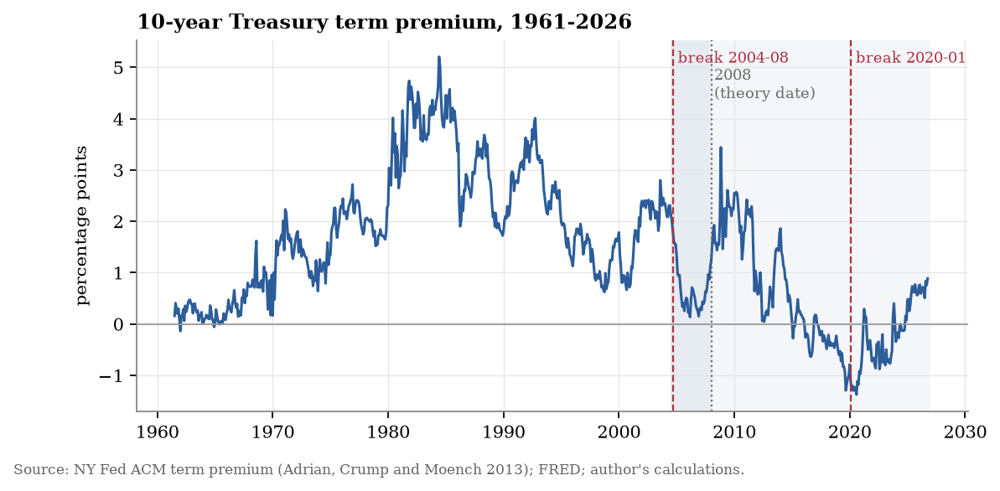

Undergraduate thesis · Research in progress
Fiscal Accommodation and Term Premium Decoupling: Federal Reserve Institutional Design and the Erosion of Bond Market Discipline
When governments borrow more, what determines how strongly the bond market responds?
My International Relations thesis investigates changes in the relationship between US fiscal deficits and the ten-year Treasury term premium. It connects that evidence to a question about institutions: how might the Federal Reserve’s design and the changing ownership of government debt affect bond-market discipline?
Why Institutional Design?
The Federal Reserve buys securities to carry out monetary policy. Its objectives differ from those of an investor deciding whether a bond offers an attractive return. Foreign central banks and reserve managers also hold Treasuries for policy and reserve-management purposes.
The hypothesis I’m investigating is that demand from buyers whose objectives are less sensitive to price can change how fiscal developments are reflected in long-term yields. The institutional question goes further: how do the Fed’s mandate, decision-making structure and flexibility to expand its balance sheet shape the persistence of that demand?
That is the connection between the title’s two halves. The data work examines whether the deficit–term-premium relationship has changed; the institutional argument asks what might explain the change and its implications for market discipline. The latter needs evidence beyond a statistical association.
A First Look at the Evidence

The chart gives context for the research question. It is not itself a test of whether deficits or central-bank purchases caused a change in term premium.
What I’m Testing
- Whether the relationship between deficits and term premium is stable across periods, and where the data suggest changes.
- Whether changes in Treasury ownership help explain those patterns.
- How the results depend on the term-premium estimate, fiscal measure, sample and other economic variables.
Limits and Next Steps
Term premium is estimated rather than directly observed. Historical data and model estimates can be revised, and changes in ownership can coincide with changes in inflation, monetary policy and the economic outlook. Distinguishing those explanations is part of the work.
The thesis is in progress. The next additions here will be selected results with their robustness checks, a fuller account of the institutional argument and the final paper when ready.
Background: Federal Reserve explanation of open-market operations. The institutional mechanism above is my research hypothesis.